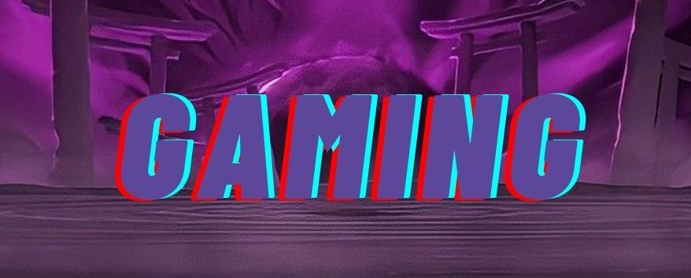
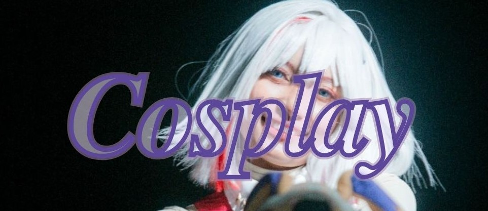
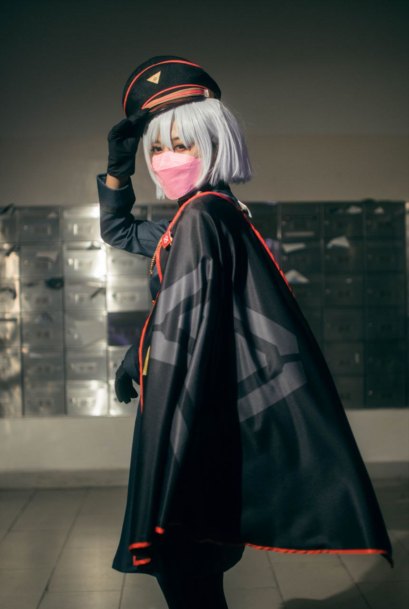
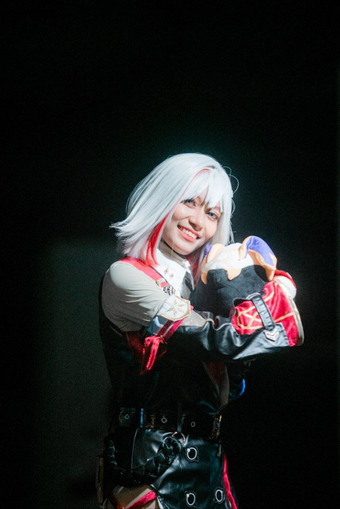
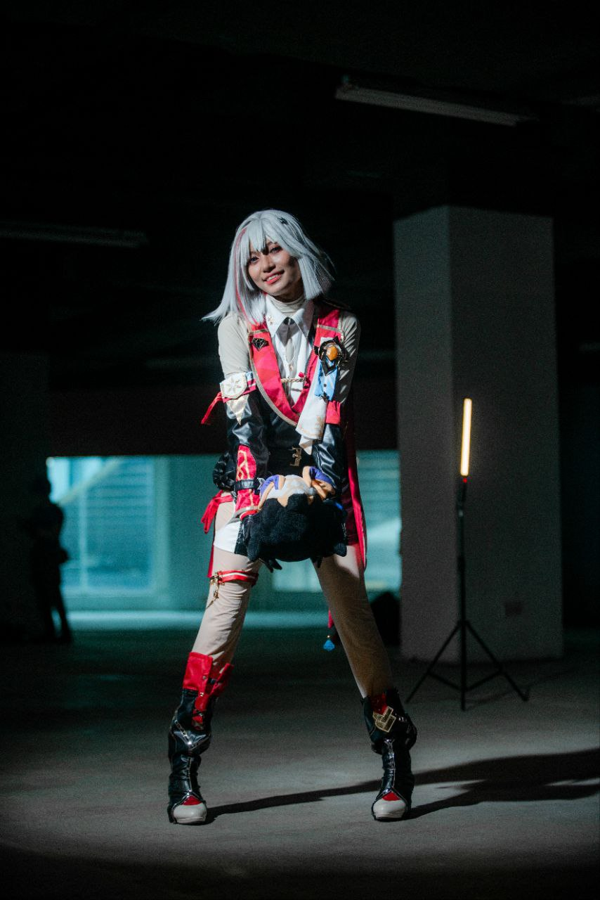
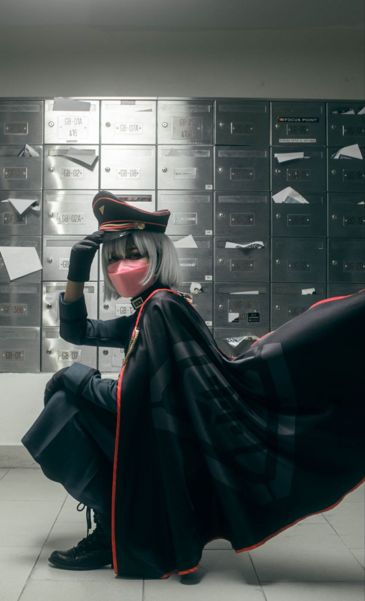
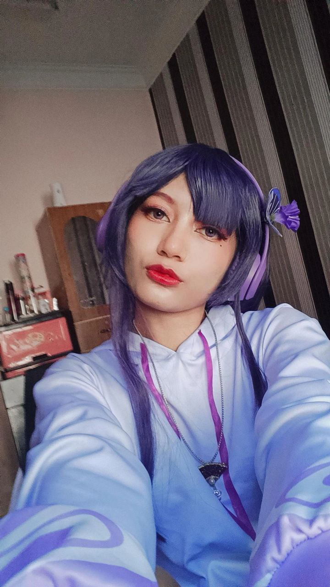

|
|
|
|
|
|
|
Explore the art of gaming and cosplaying, one epic journey at a time
See my Cosplay Gallery
|  | |
| My favourite game is Genshin Impact. Genshin is the first RPG and an open world game that I played. It's a fantasy game, very relaxing and fun to play. It has the best background music that you can listen while exploring. This game require big storage and graphic therefore it's best to play on a laptop or PC. You can download this game for free. Click here | |
| My second favourite game is Danganronpa. It's a series and my fav is Danganronpa V3. I love this game as it is a detective type of game. I love solving mysteries of murder and I always impressed from their murder methods. To play this game, you need to use a controller. Both XBox and PlayStation cosntroller is fine. You can buy this game at Steam with the price of RM69 for one series. That's where I buy most of my games. | |
| Another RPG that I play is Wuthering Waves. It's quite similar to Genshin Impact, open-world action RPG. What makes it different is that this game mainly trained player to dodge and counter attack. This game is also free to play. Click here to download. | |
| Other than RPG, I really love rhythm game like HATSUNE MIKU: COLORFUL STAGE! also known as "Project SEKAI" or "Proseka". This game is very appealing by its catchy tunes, stunning visuals, and character development. This game is best play on a tablet as it has bigger screen but can also be played on mobile. Read more here to learn about this game. | |
|  | ||
| 
Nemu Aohitsugi from Hypnosis Mic |
All my cosplay costs around RM200-RM600. I bought my first cosplay on Instagram but now I always buy it on Taobao as it is affordable with very high quality materials. I cosplay game and anime characters but mostly games because I play games more often than watching anime. Plus, games have the best character designs. | 
Topaz from Honkai: Star Rail |
|  |  |  |